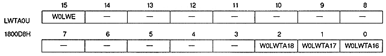
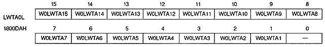
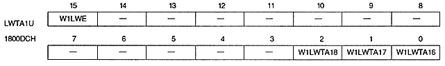
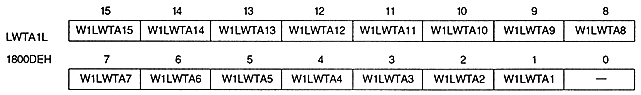

N0SWA | 1800D0H | Bit 4 | Transparency processing window for NBG0 (or RBG1) |
N1SWA | 1800D0H | bit 12 | Transparency processing window for NBG1 (or EXBG) |
N2SWA | 1800D2H | bit 4 | Transparency processing window for NBG2 |
N3SWA | 1800D2H | bit 12 | Transparency processing window for NBG3 |
R0SWA | 1800D4H | bit 4 | Transparent processing window for RBG0 |
SPSWA | 1800D4H | bit 12 | For sprites in transparent processing window |
CCSWA | 1800D6H | bit 12 | For color calculation window |
xxSWA | Processing |
0 | Enable inside SW window |
1 | Enable outside SW window |




Line window enable bit : Line window enable bit (W0LWE, W1LWE)
W0LWE | 1800D8H | Bit 15 | For W0 |
W1LWE | 1800DCH | bit 15 | for W1 |